Anyone can get a post seen.I build the audience that stays.
I'm Charity Okoloeze, a digital marketing strategist. I took a cybersecurity brand from under 10,000 followers to 14,000+ in six months, and a science page from under 200 LinkedIn followers to 2,000+. Both organically, both with a plan, both measured.
Your brand could be next. Here is what that looks like.
Social media that gets noticedCommunities that talk backEmails that get openedContent people finishFounders people trustMarketing that keeps moving
4+years turning content into conversations
10xLinkedIn growth for one client, from under 200 to 2,000+
14K+organic followers built in six months
60K+Instagram views in one 30 day window
50%email open rate on a list of 1,400+
Marketing that makes the work count.
hello, I'm Charity
I enjoy seeing what happens when a brand finally starts connecting with the right people.
That's what drew me to digital marketing. Over the past 4+ years, I've had the opportunity to work with startups and growing businesses, helping them find their voice online, create content people want to engage with and build communities around what they do.
I've seen what a thoughtful strategy can achieve, from growing a LinkedIn audience from fewer than 200 to over 2,000 followers to helping a technology brand gain 4,000+ organic followers in just six months.
I love the creative side of marketing, but I'm just as interested in the thinking behind it: understanding people, discovering what resonates and finding better ways to turn attention into genuine engagement and growth.
For me, it's never just about filling a content calendar. It's about making the work count.
Six ways I make your marketing work harder
Social Media Strategy and Management
Stop posting into the void. Platform-specific plans, a calendar that runs on time and profiles that get found, so the audience you grow is the one you actually want.
Community Management
Followers watch. Communities show up. I start the conversations, reply fast and keep the space healthy, so people stay and talk to each other, not just to you.
Email Marketing
The one channel you truly own. Newsletters, segmented campaigns and automated flows people open. One list I managed reached a 50% open rate.
Content Strategy and Copywriting
Content people finish reading. Ideas worth publishing, copy shaped for each platform and a clear next step, so attention turns into action.
Founder Thought Leadership and Personal Branding
Be trusted before the first call. I turn what you know into LinkedIn content that builds authority. I have woken up a dormant founder account and built a new one from zero.
Marketing Virtual Assistance
Marketing that keeps moving while you run the business. Scheduling, campaign coordination, content organisation and reporting, handled and on time.
Three brands. Three growth stories. Real numbers.
HackerProof HQ · Cybersecurity and Technology · Social Media and Community Manager
How a cybersecurity brand grew from under 10K to 14K+ followers in six months, organically
The challenge
A brand with real expertise and not enough eyes on it. The company needed more visibility, a bigger audience and a community that cared about cybersecurity and tech.
What I did
Built and ran one strategy across LinkedIn, Instagram, X, TikTok, Threads, YouTube and WhatsApp.
Created content on cybersecurity education, industry news, podcast interviews, career development and tech trends.
Designed carousels, branded graphics and YouTube thumbnails, and edited short videos for Reels, TikTok and Shorts.
Managed engagement and the WhatsApp community, and optimised profiles for discovery.
Developed founder thought leadership content.
Tools: Canva, CapCut, Buffer, Notion, ConvertKit, YouTube Studio, ChatGPT, Claude
The results
10K to 14K+
organic social following in six months
60K+
Instagram views in the last 30 days (63,790)
1,000+ to 1,400+
email subscribers (1,434 today)
50.58%
email open rate, 3.21% click rate, last 90 days
~2,000
weekly views on X
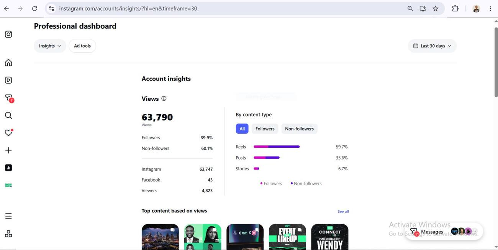
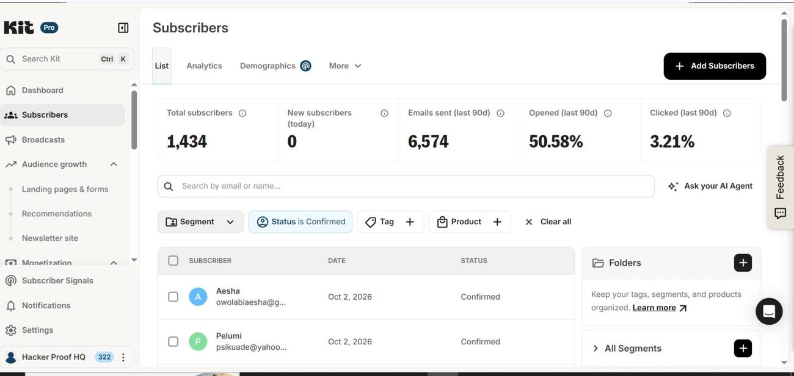
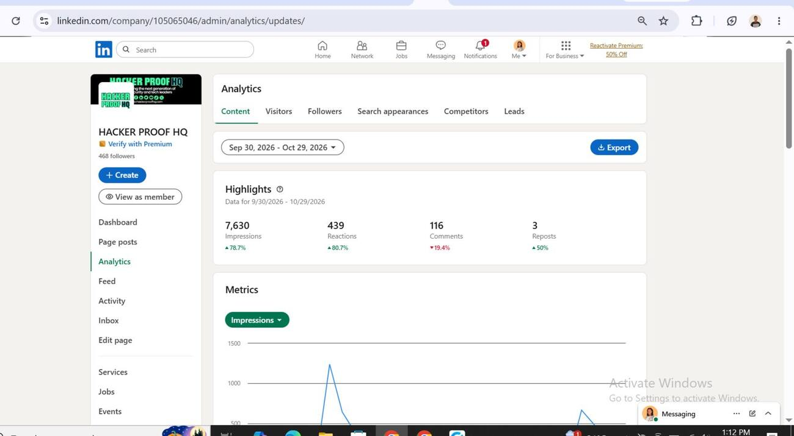
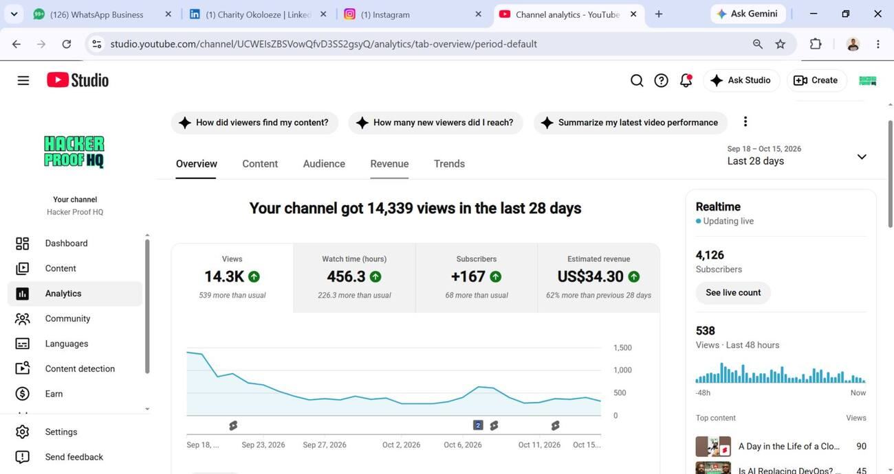
Biospherea · Science and Research · Social Media Manager
From under 200 to 2,000+ LinkedIn followers in one year
The challenge
Great science, a tiny audience. Biospherea had fewer than 200 LinkedIn followers and needed a steadier content strategy to share knowledge, be found and attract a professional audience.
What I did
Planned and ran the social strategy across LinkedIn, Facebook and X.
Created educational science carousels and promoted weekly webinars and guest sessions.
Published science facts, discoveries, industry updates and content on influential scientists.
Handled planning, copywriting, publishing and analytics.
Researched competitors and sharpened the content positioning.
Led a team of six on social media.
Tools: Google Workspace, AnswerThePublic
The results
<200 to 2,000+
LinkedIn followers, organically, in one year
~10x
audience growth
Repeatable
a content approach mixing education, industry information and engagement
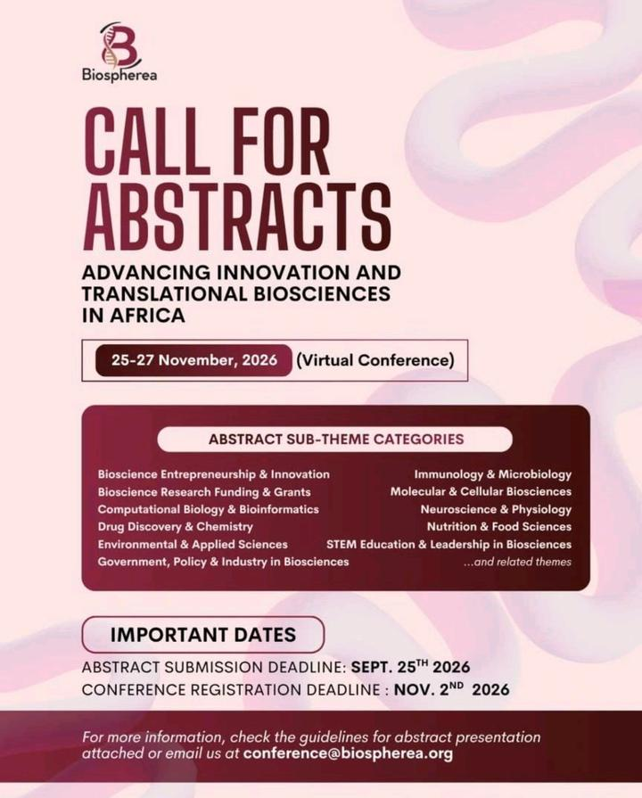
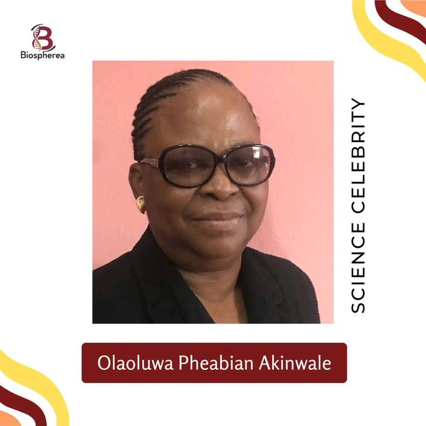
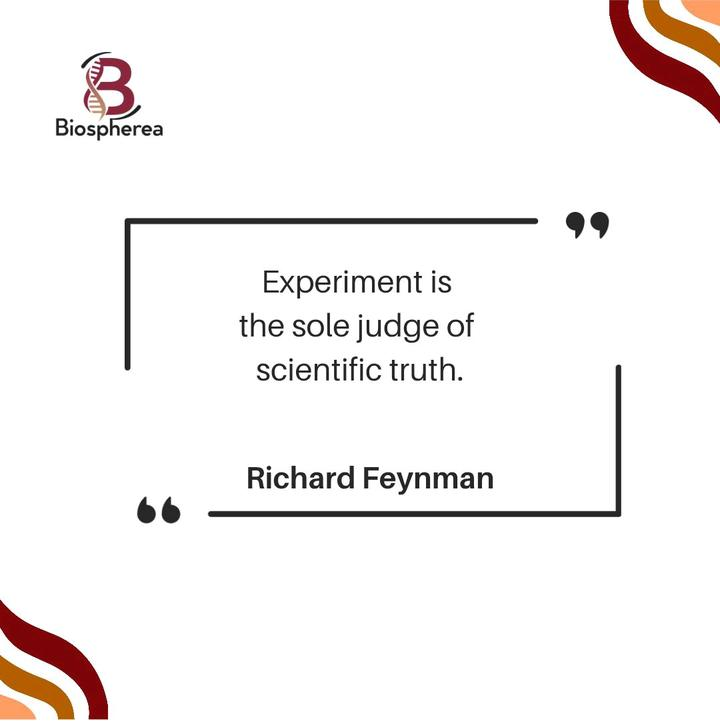
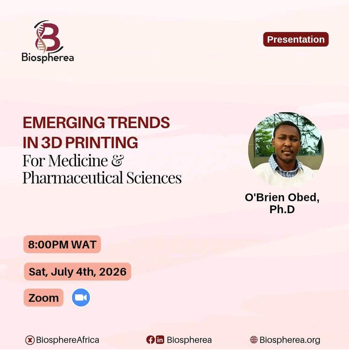
Two founder accounts · Cybersecurity, Technology and Professional Services · LinkedIn Content Manager
Two founders. One dormant, one brand new. Both now visible on LinkedIn.
The challenge
One founder's LinkedIn account had gone quiet. Another professional was starting from zero. Both needed clear positioning, steady content and more of the right people finding them.
What I did
Wrote an individual thought leadership strategy for each.
Developed content ideas from their expertise and backgrounds.
Managed publishing and engagement, and tracked analytics and growth.
Focus: founder branding, LinkedIn strategy, thought leadership, analytics
The results
Daniel Imhans
Dormant account reactivated. 615 followers within three months. 661 impressions in seven days. 200 profile viewers in 90 days. 11 search appearances in one week.
Osilama Vincent
New presence from scratch. 572 followers in one month, 588 cumulative impressions, 314 search appearances.
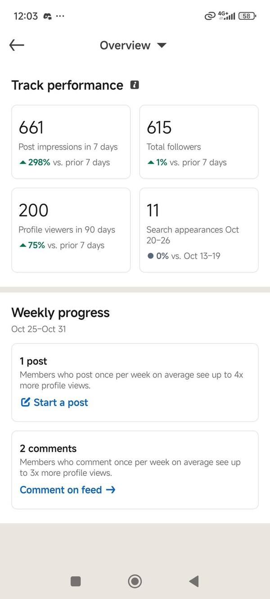
POI TECH Community · Technology · Community Manager
Keeping the POI TECH community active, connected and moving towards its tech goals
The challenge
A tech community only works when people keep showing up. POI TECH needed steady daily activity and genuinely useful content, so members stay connected to each other and keep making progress towards their tech goals.
What I did
Kept the community active through daily engagement and conversation.
Shared useful tech resources and free training opportunities.
Posted industry news and updates that help members move towards their goals.
Passed on exclusive discounts and community updates.
Followed a weekly rhythm of themed days, from group check-ins and free learning resources to success stories, trending tech news and a Friday space for members to promote their work.
Focus: community management, WhatsApp engagement, member support, tech resources
How it works
Daily
engagement, conversation and encouragement for members
Free
training opportunities and tech resources shared with the group
Weekly
a themed programme that gives members something to look forward to
Exclusive
discounts and updates for community members
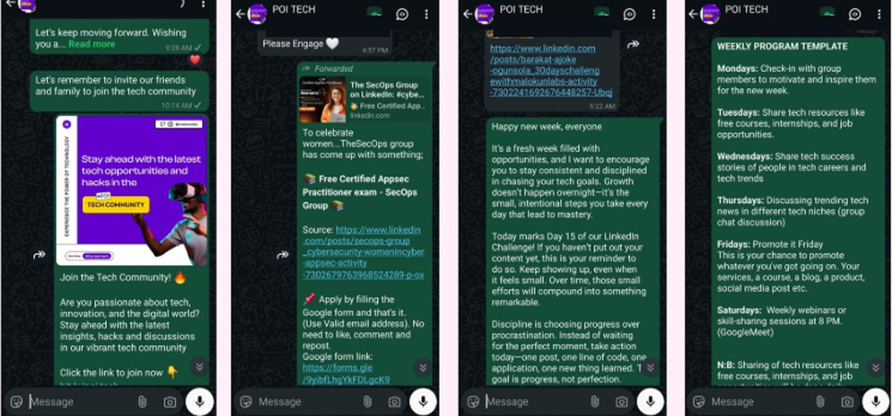
Tairo Consulting · Consulting and Business Services · Email Marketing
Monthly emails that keep Tairo Consulting subscribers informed, connected and supported
The challenge
A consulting brand's audience needs more than the occasional announcement. Tairo Consulting needed a steady monthly email that kept subscribers informed and supported in reaching their business goals.
What I did
Managed the monthly email engagement with the subscriber list.
Shared relevant business insights and industry updates.
Promoted professional training opportunities and special offers.
Reviewed campaign performance reports to see how each send landed.
business insights, industry updates and professional training opportunities
Offers
special offers that support subscribers' business goals
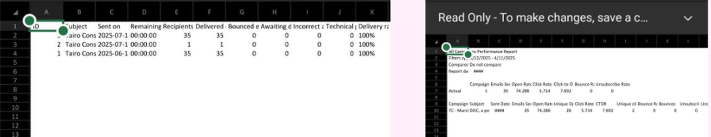
The work itself. Judge it with your own eyes.
Thumbnails built to get clicked, carousels built to be swiped, event creatives built to get people to show up. Tap any piece to look closer.
Video showcase
Short-form video edits built to hold attention. Tap a video to play it.
Image samples
Milestone posts, event countdowns, webinar graphics and promotions across brands including HackerProof HQ, Biospherea, Tairo Consulting and Zormor. Tap any piece to look closer.
Carousel slides
Flip through the Biospherea LinkedIn feed. Swipe, use the arrows or let it turn on its own.
Where the growth happened
HackerProof HQ
Social Media Manager
Running social, community and email for a cybersecurity and tech careers brand. The full story is in the first case study.
Tairo Consulting
Digital Marketer
Developed and managed social media strategy and content that strengthened a consulting brand's online presence.
Malokun Labs
Community Manager
Built and moderated a community through consistent, responsive engagement.
Biospherea
Social Media Manager
Led strategy and a team of six, taking LinkedIn from under 200 to 2,000+ followers. Awarded Most Outstanding Volunteering Team (Social Media Management), December 2021.
Don't take my word for it
Working with Charity over the past 18 months has been an absolute pleasure. She is professional, reliable, and incredibly proactive in her communication, always keeping projects on track (and me on deadline!) with gentle, thoughtful reminders.
Charity developed and managed social media strategies that meaningfully boosted engagement and strengthened Tairo Consulting's online presence. She brings a great mix of creativity and analytical thinking, creating content that not only looks great but also delivers measurable results.
I would absolutely recommend Charity to any business looking for a marketing partner who is dependable, collaborative, and genuinely invested in helping your brand grow.
Charity joined during a shift in our business direction, which limited the full internship experience. Despite that, she remained flexible and professional. She quickly picked up tasks, contributed creative ideas to video and social media projects and brought a great attitude. Charity was open to feedback, eager to learn and made the most of her time with us. We truly appreciated her effort and look forward to seeing where her talents take her next.
Charity brings a unique and fantastic creative perspective to video editing and social media management, consistently delivering impressive work even while mastering new platforms on the fly. She is a top-tier communicator who approaches every challenge with a positive attitude and a willingness to experiment to get the best result. I could always depend on her to deliver high-quality assets, and I was impressed by how quickly she grew during her time with us.
Charity is always willing to go the extra mile to answer questions, meet challenges and provide feedback. She has a keen sense of what will make a great campaign, and set us up for success at every turn.
Charity's work ethic is second to none. She consistently brings her best self to every task, managing timelines effectively to meet and often exceed key deliverables. Her strong leadership, goal-setting, and execution skills were especially evident during her time as Communications and Social Media Lead at Biospherea. In 2021, she developed and implemented an engaging social media communications strategy that grew our online community by more than 2x in less than a year.
Charity is your go-to person for anything digital growth and community management. She understands what really matters in social media marketing, community building, and is capable of handling any project in this regard. I have recommended her for jobs that she carried out to the satisfaction of the clients. I'm very confident in her skills as a social media or community manager.
Working with Charity to boost visibility and followers for Science Café made me understand the value and importance of social media presence. Under her guidance we built a directory of social media channels and published guidelines for social media campaigns. I would definitely recommend her for any position where creativity and social media management were essential.
If you're looking for a creative social media manager that'll give you results, it's Charity.
I've been working with Charity as part of the communications team for Science café for a while now. The best way to describe her is efficient and reliable.
I've watched her strategize and perform detailed research to boost the community's visibility. She responds to questions and suggestions so quick you'd wonder if she ever sleeps. Her passion for growth makes her learn, learn, and continue learning with as many resources as she can acquire. She's an asset on whatever team she belongs to.
Highly recommended.
Charity, apart from being diligent about every task at hand, is someone who cherishes the growth of her colleagues. She makes sure no stone is left unturned while discharging her role as a social media manager. She has proven that she knows her onions with the way the community where we work together gained a huge visibility and collaboration with international organisations. Thanks to her level of expertise, the community can boast of a good social media presence.
Above all, Charity can be hellbent about the growth of every colleague that crosses path with her in the community. She doesn't look out for herself only, but for others too. I strongly believe she will be a great asset for any establishment that needs to fill the position of the social media manager with a fit person.
The skills and tools behind the results
Strategy and Growth
Social Media Strategy, Organic Growth, Content Strategy, Digital Campaigns, Audience Research, Lead Generation
Engagement and Community
Community Management, Social Listening, Audience Engagement, Moderation, Founder Branding